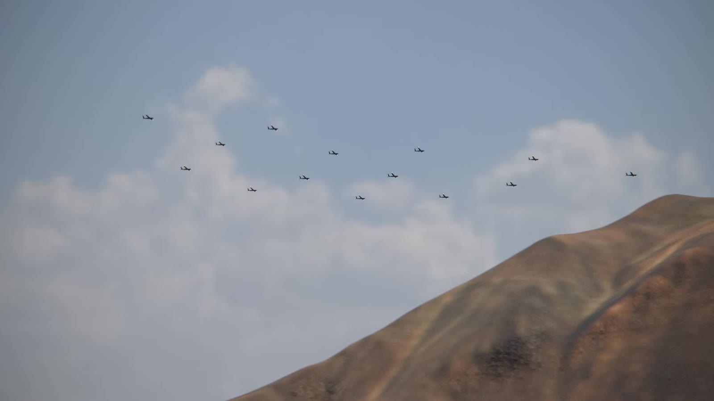
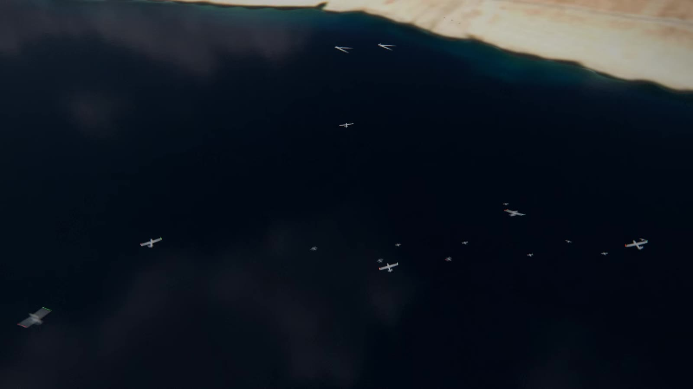

Two levels: each vehicle stays capable on its own, and the fleet works as one when everything around it fails.
Capabilities by area
Navigation without GPS
Flies with zero satellites. Five aircraft held the mission through 150 seconds with no GPS. Neighbour and terrain fixes are built and tested.
Spoofing detection. A false GPS signal is spotted and outvoted. Built and unit-tested.
Takes off without GPS, or loses it in flight and carries on.
Shared clock without satellites, tested. A fleet wind estimate is in development.
Coordination with no leader
One plan, decided on every vehicle from the same shared picture. No master, no single point of failure.
Self-healing. When one vehicle's computer fails, the rest carry on and land safely.
Built to keep the mission if base is lost. The ground station supervises; the plan lives on every vehicle.
Knows who is gone. A vehicle silent past its deadline is declared lost and the rest plan around it.
Formation and separation
Ghost-leader ring. Every aircraft follows the same virtual leader along the route.
Altitude layers. A height layer per aircraft, so no two meet at the same height.
Predicts conflicts ahead and holds or gives way, with defined right of way.
Close formation at 15–20 m on precise positioning. In development.
Launch and recovery
Hand-throw one by one, or launch the whole fleet with one command.
Pilot hand-over. Fly an aircraft by hand, switch to automatic, and it joins the formation.
Lands itself one by one, in an order decided on board, at the launch point. Separate landing spots in development.
Survives its own computer failing. The flight controller continues and the aircraft lands.
Communications and security
Encrypted, authenticated messages. Forged or replayed messages are rejected; key rotation is built in.
Relay network. Messages hop vehicle to vehicle to reach whoever is out of range.
Keeps working under jamming on the last agreed plan, and rejoins when the link returns.
Quiet mode. Sends only when something changes.
Air, ground and sea
Built for aircraft, ground robots and boats on one network. Task allocation tested with mixed simulated fleets of 3,000.
Each job to a vehicle that can do it, matched by capability. Tested in simulation.
Fixed-wing first. Multirotor, ground and boat behaviour are in development.
Real ground and sea vehicles follow the aircraft trial.
Any vehicle, any autopilot
Works with PX4 and ArduPilot, above the aircraft's own autopilot; no rebuild per aircraft.
New autopilots plug in as adapters, with no change to the core.
One program for simulation and aircraft; it identifies its flight controller on power-up.
Standard ground station. The whole fleet appears as one vehicle in it.
People in charge
The pilot always wins. Any manual input overrides; the software never arms or launches on its own.
It recommends, a person decides. No weapon-release code in the system.
Pause, stop or recall from the operator station. In development.
Operator actions and missions recorded in a tamper-evident log.
A system of systems
Many vehicles. Many makers. One mission.
Every vehicle stays a complete system: its own autopilot, sensors, navigation and computer. Homing Vector adds one shared layer on top, the mission, a secure relay network and a common clock, so aircraft, ground robots and boats work as one force.
It runs on every vehicle, above whatever autopilot and airframe it already has. If a vehicle, the radio or the ground station is lost, the rest carry on.
Products
Products

The system
Homing Vector
One system to buy.
Complete systems for forces: vehicles, the Homing Vector software and an operator station. Or the software licensed onto a laboratory's or manufacturer's own vehicles. Works with PX4 and ArduPilot.

On every vehicle
Scattrnodes
The coordination core.
Built for a palm-sized computer beside each autopilot. It shares out the work, keeps every vehicle apart, holds formation, flies on without GPS and brings the fleet home, with no leader.
The operator station
Scattrnodes Eyes
Supervises. Never decides.
One operator watches the whole fleet and stays in charge: orders in plain language, confirmed with one press and hold; missions uploaded and read back; maps that work offline on a rugged laptop. Fleet-wide pause and recall are in development.
Schematic. Fleet-scale live use is in development.
Roadmap
From simulation to the field.
Next few weeks
First real flight
Five fixed-wing aircraft, a safety pilot on standby for each, every bench check done first.
Within a year
A witnessed field trial
Five aircraft, flying without GPS and under jamming, run by an outside observer through Scattrnodes Eyes.
Then
Complete Homing Vector systems
Paid trials and first orders. Bigger fleets, faster aircraft, ground and sea vehicles in the field.